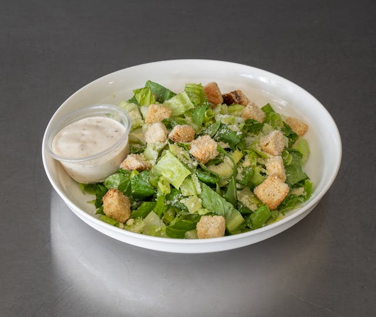

Caesar Salad
Description
The Classic Caesar Salad is a crisp, fresh salad featuring romaine lettuce, crunchy croutons, Parmesan cheese, and a tangy, garlicky Caesar dressing. It's an easy-to-make side dish that pairs well with Italian-inspired meals.
Description
The Classic Caesar Salad is a crisp, fresh salad featuring romaine lettuce, crunchy croutons, Parmesan cheese, and a tangy, garlicky Caesar dressing. It's an easy-to-make side dish that pairs well with Italian-inspired meals.
Ingredients
- Romaine lettuce
- Croutons
- Grated Parmesan cheese
- Caesar dressing (mayonnaise, garlic, anchovies, lemon juice, Dijon mustard, olive oil)
- Optional: Grilled chicken or shrimp
Steps to Prepare Caesar Salad
- Toss romaine lettuce, croutons, and Parmesan cheese in a bowl.
- Drizzle with Caesar dressing and mix gently.
- Serve as is, or top with grilled chicken or shrimp for added protein.